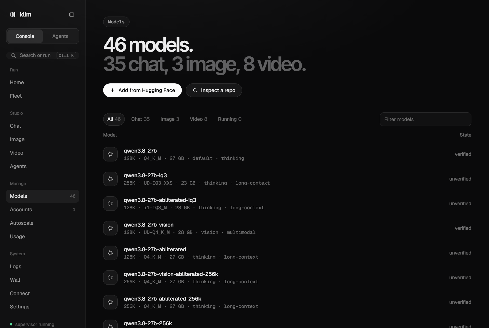

Free GPUs for your coding agent.
kllm runs open-weight models on Kaggle's free GPUs and serves them on localhost, through the OpenAI and Anthropic APIs your tools already speak. No local GPU. No API bill.
pipx install kllm-gatewayThen run kllm and paste your Kaggle token. Works with Claude Code, opencode, Cursor, Codex CLI, Gemini CLI and any OpenAI client.

The control panel at 127.0.0.1:8080/admin. Setup, models, GPUs and usage, all in the browser.
Your tools talk to localhost. kllm handles the GPUs.
One small relay on your machine
A 55 MB process answers on 127.0.0.1:8080 in both OpenAI and Anthropic formats.
GPUs start when you need them
The first request starts a private notebook on your Kaggle account. Idle GPUs stop on their own to save quota.
Sessions outlive Kaggle's limit
Before a notebook's 12-hour cap, kllm starts a successor and moves each conversation with its cache warm.
Six weeks behind a real coding workflow.
One developer's Claude Code and opencode sessions, Oct 6 to Nov 16 2026, from kllm's own request log.
Already speaks your API.
Point any OpenAI or Anthropic client at localhost and keep your code. claude-kllm starts Claude Code with the model's real context window, and the panel writes the config for opencode, Codex CLI, Gemini CLI and Cursor.
from openai import OpenAI client = OpenAI( base_url="http://127.0.0.1:8080/v1", api_key="local", ) reply = client.chat.completions.create( model="kllm", messages=[{"role": "user", "content": "Refactor this module."}], )
Measured on two Tesla T4s.
46 chat, image and video models ship in the library, and any GGUF or diffusers repo from Hugging Face can be added from the panel.
| Model | Best for | Context | Speed |
|---|---|---|---|
qwen3.8-27b | Highest answer quality, with vision and 256K variants | 128K to 256K | 16 to 19 tok/s |
qwen3.6-35b-abliterated | Long agent sessions at speed | 256K | 70 tok/s short, 43 at 209K |
qwen3-coder-30b-abliterated | Fastest turnaround | 96K | 84 tok/s short |
Before you install.
Is it really free?
Yes, within Kaggle's free tier: about 30 GPU hours a week per account. kllm stops idle GPUs so the hours last.
How is it different from Ollama or LM Studio?
Those run models on your own hardware. kllm runs them on Kaggle's GPUs and keeps only a small relay on your machine, so a laptop without a GPU can run a 35B model.
Can I run Claude Code on an open model?
Yes. claude-kllm starts Claude Code against kllm's Anthropic-compatible endpoint, with the model's real context window so it stops auto-compacting early.
Does it work with Cursor, Continue, Aider or LangChain?
Anything that accepts an OpenAI base URL works: http://127.0.0.1:8080/v1 with the model kllm.
Is my Kaggle token safe?
It stays on your machine and is used only to call Kaggle's API. The notebook reports its address encrypted and signed, and your prompts go only to your own notebook.
Start in two minutes.
pipx install kllm-gateway